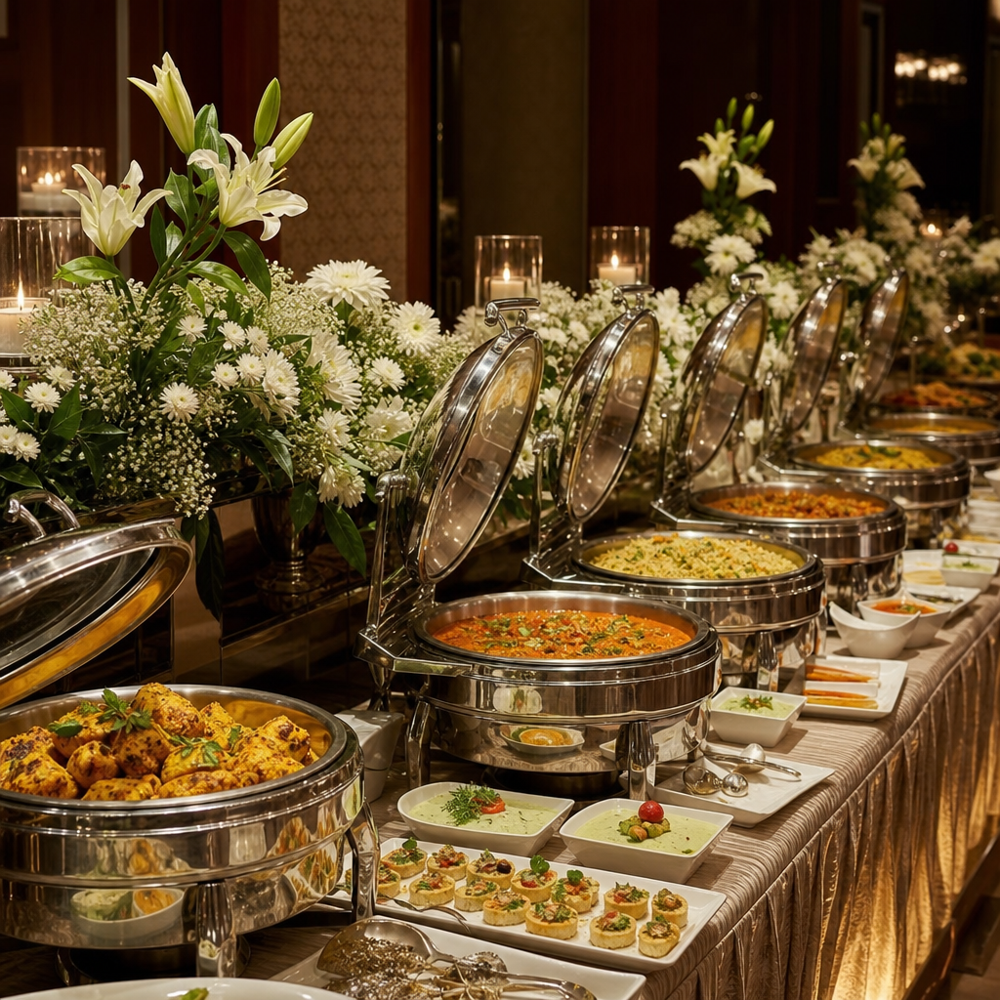

Vira
Fairfield Mumbai Andheri West's larger event room for social celebrations, receptions, conferences and flexible event setups on New Link Road.
1,570.5sq. ft.
120banquet / reception
120theatre style
Host birthdays, engagements, roka ceremonies, baby showers, anniversaries, intimate weddings, kitty parties and corporate events with the comfort of Fairfield by Marriott hospitality — right on New Link Road in the heart of Andheri West, minutes from Lokhandwala, Versova and SEEPZ.
Every enquiry deserves a page that matches its intent. Explore dedicated venues for the occasions families and companies actually search for across Andheri West, Lokhandwala, Versova, Oshiwara, Malad and nearby neighbourhoods.
From milestone birthdays to first birthdays and intimate family dinners in Andheri West.
Explore birthday celebrations →A polished setting for elegant ceremonies, family gatherings and dinner celebrations.
Explore engagement events →Warm, comfortable celebrations with customised seating, menus and décor possibilities.
Explore baby showers →For close-knit wedding functions, mehendi, family rituals and wedding lunches.
Explore intimate weddings →Meetings, training sessions, conferences, networking and cocktail dinners.
Explore corporate events →Glamorous ladies kitty afternoons with high-tea, games and a private stylish setting.
Explore kitty parties →Fairfield Mumbai Andheri West's larger event room for social celebrations, receptions, conferences and flexible event setups on New Link Road.
A compact, elegant setting suited to intimate celebrations, presentations, meetings and small-format social gatherings in Andheri West.
Tell us the basics. We'll turn it into a simple WhatsApp enquiry so the Andheri West banquet team can respond with venue fit, availability, menus and a customised package.
Approved sample menus for Vegetarian, Jain, Non-Vegetarian, High Tea and Corporate events, crafted by the hotel's Pana restaurant. We explain the style of offering without publishing commercial terms the hotel prefers to keep customised for your date and guest count.

On B-43 New Link Road, Andheri West — minutes from Lokhandwala, Versova, Oshiwara and the Linking Road stretch. Easy for guests arriving from across the western suburbs.
Vira for up to 120 guests and Reva for intimate 25–40 gatherings. Choose by occasion, not by compromise — both within the same premium hotel.
Professional service standards, in-house catering from Pana restaurant, A/V support and Marriott Certified Wedding Planners for your celebration.
Sample menus for Vegetarian, Jain, Non-Vegetarian and High Tea — tailored to the preferences of families across Andheri West and nearby neighbourhoods.
Seamless connectivity to SEEPZ, Powai and BKC — ideal for corporate meetings, training and networking events.
Out-of-town guests can stay in 106 modern rooms & suites — perfect for intimate weddings and family functions.
Families and companies booking Vira & Reva travel from across the western suburbs.
"Vira made our engagement feel like a five-star celebration without leaving Andheri West — the décor, the dinner, the warmth of the team."A recent Andheri West celebration
The hotel has two event rooms — Vira and Reva — totalling 185 sq. mt. of event space on New Link Road, Andheri West.
Vira hosts up to 120 guests in banquet, reception and theatre-style setups across 1,570.5 sq. ft. (145.9 sq. mt.). Final capacity should always be reconfirmed for your chosen setup.
Reva hosts up to 25 guests banquet-style and up to 40 guests reception-style across 420.9 sq. ft. (39.1 sq. mt.) — ideal for intimate gatherings and meetings.
Yes. The official property events page promotes social functions and celebrations. The banquet team can confirm the right room, setup, menu and date availability for your specific event in Andheri West.
Yes. Marriott lists conferences, training events, presentations, seminars, networking sessions and related formats among the venue uses, with A/V equipment and complimentary Wi-Fi.
Fairfield by Marriott Mumbai Andheri West is at B-43, New Link Road, Andheri West, Mumbai, Maharashtra 400053 — minutes from Lokhandwala, Versova and SEEPZ.
Share your event, expected guest count and preferred date. Get the most relevant venue suggestion and a customised conversation with the Andheri West banquet team.
Check My Date Call 98330 12386